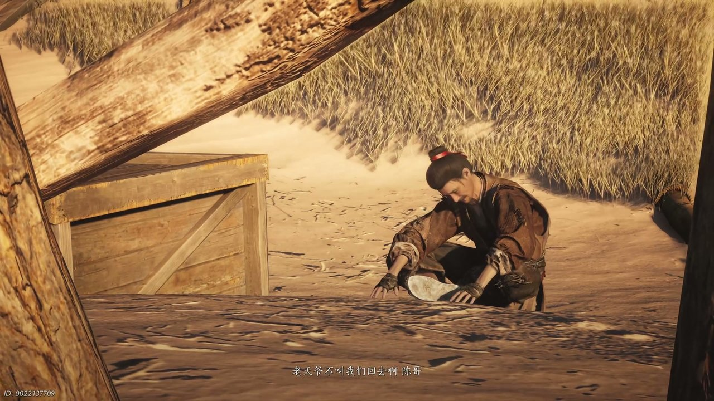
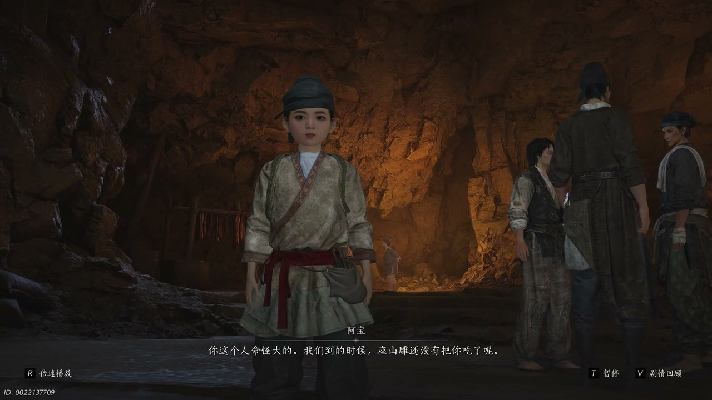
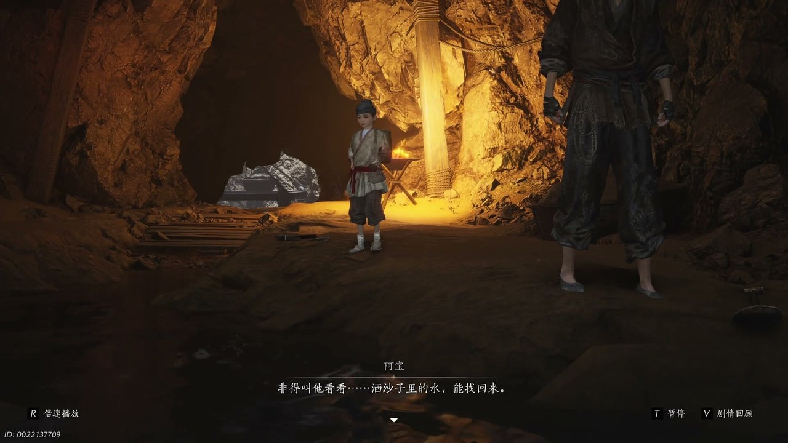
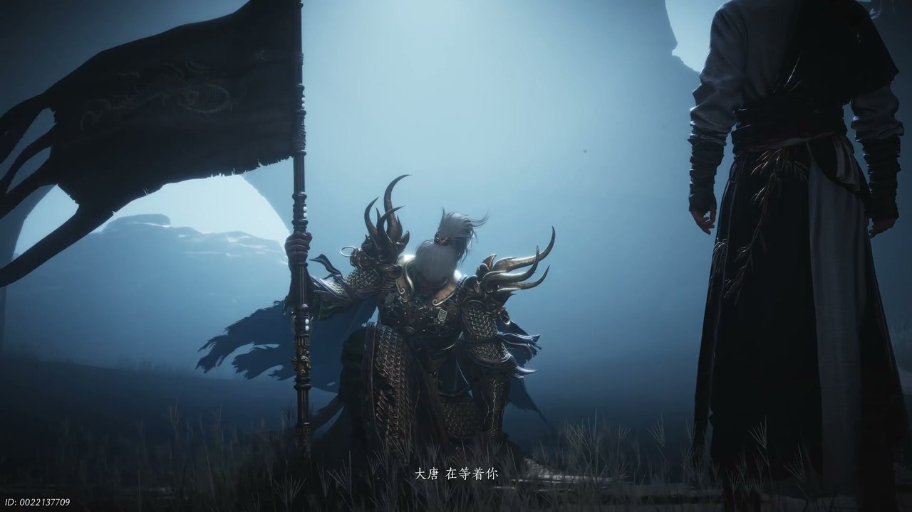
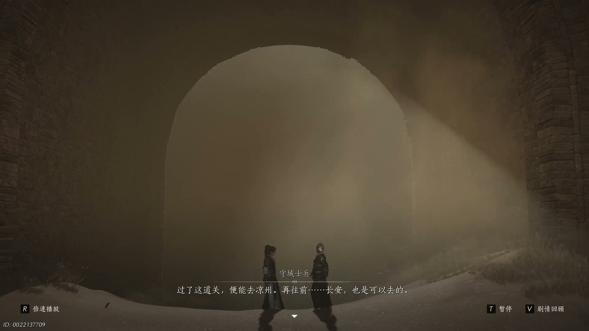
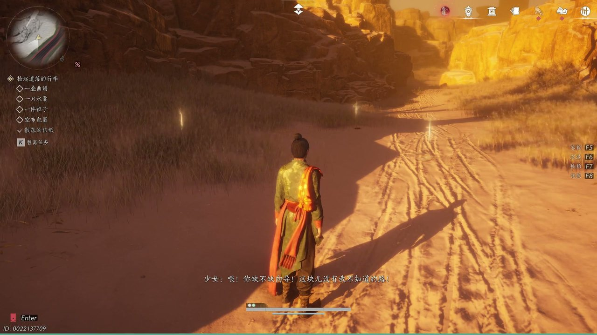

燕云背后的故事：第10集 沙海
燕云背后的故事：第10集 沙海

朋友们，上一集咱们说到——商队途经山林遇劫、麻布袋暗藏玄机、少东家隐姓埋名随行，三处线索交织让前路愈发迷茫。新来的朋友可能纳闷，躲过劫匪之后，商队为何突然踏入茫茫黄沙地界？简单说，战乱封锁了官道，商队只能绕行无人沙海，想要赶往黑肥城只能横穿荒漠。可他哪知道，黄沙之中不仅有恶劣环境，还藏着诸多失去归途的流民。这不，风沙席卷整条山路，商队被迫转向荒芜沙漠，少东家依旧紧紧护住身上的麻布袋。

漫天黄沙不断席卷商队行进的道路，狂风卷起细沙拍打在众人衣衫之上，脚下松软的沙地让前行变得十分艰难。少东家意识渐渐昏沉，陷入梦境之中，怀中的麻布袋不断传出呜咽之声。麻布袋喃喃自语：“老天爷不叫我们回去啊。”他蜷缩在沙地之上，双手死死攥着布袋边缘，满心都是无法重返长安的绝望。麻布袋继续哭诉：“人不叫我活，牛不叫我活，来找老天爷也不让我活呀。”风沙钻入布袋缝隙，袋内声响愈发急促，少东家想要打开布袋查看，又害怕窥见不该看见的景象，只能不停压抑心中的好奇。身旁商队众人早已疲惫不堪，纷纷靠在骆驼身旁休憩，没人留意到少东家异于常人的状态。

不知过了多久，少东家在一片土井旁缓缓苏醒，周身不再是连绵黄沙，而是错落分布的土井村落。阿宝快步走到他身旁，伸手拍了拍他的肩膀开口说道：“你这个人的命怪大的。”阿宝蹲下身，指了指不远处的沙丘：“我们到的时候，座山雕还没有把你吃到呢。”少东家猛地坐起身，下意识伸手去摸肩头，发现一直贴身携带的麻布袋不见了踪影，顿时神色慌张。麻布袋失而复得的执念涌上心头，他慌乱地四处张望，不停念叨布袋丢失的事情。阿汊见状连忙上前安抚，询问布袋的模样想要帮忙寻找，周围井下居民也停下手中编筐的活计，好奇打量着神情慌乱的少东家。阿宝递来一碗清水，劝说他先平复心神，不要为了一件物品过度焦躁。

少东家捧着清水却无心饮用，依旧沉浸在布袋遗失的慌乱之中，不停感叹前路漫漫没有尽头。阿宝坐在火堆旁，缓缓讲述村落世代挖井的经历：“撒沙子里的肺能找回来。”阿宝说起自己姥爷一辈子执着挖井，即便祖辈都没能吃到井中产出的东西，依旧没有放弃挖掘。他抬手指向村落中央的深井，诉说村民靠着一筐一筐挖沙，硬生生在荒漠之中开辟出生存之地。阿宝看着神情沮丧的少东家继续说道：“你们这些人跟老天爷讲活个啥呢。”少东家静静聆听村民的故事，紧绷的心神慢慢放松，看着村民日复一日劳作的身影，内心生出几分触动。这时阿宝忽然发现沙丘后方有狐狸掠过，还叼走了一块布料，少东家连忙起身前去查看。

少东家跟着阿宝来到沙丘石块后方，找到了狐狸遗落的破布碎片，认出这正是自己麻布袋上的布料。沙海深处传来苍凉的歌谣，曲调满是对长安故土的思念，小廉等一众流落边关的士卒围坐在一起，低声吟唱着思乡之曲。小廉望着远方天际，语气坚定开口：“大唐在等着你。”士卒们大多是安西军残余，深陷荒漠无法返回故土，只能靠着念想坚守。小廉一遍遍呼唤军中同袍，细数安西军各处阵队，即便战友早已埋骨沙场，依旧执着认为他们还坚守在阵地之上。战乱阻隔了归途，兵匪遍布沙海要道，商队前行的道路被彻底阻断，少东家看着这群流离的士卒，心中想要前往黑肥城的决心更加坚定。

穿过流民聚集的沙海村落，少东家独自来到一处边关隘口，驻守城门的士兵认出他游侠的身份，缓缓打开紧闭的城门。守城士兵开口说道：“过了这道关便能去凉州。”士兵抬手望向东方：“再往前长安也是可以去的。”少东家驻足询问士兵为何甘愿留守隘口，放弃返回长安的机会。守城士兵神色肃穆，将一枚残破的符节交到少东家手中，这是将领托付送往长安的信物，早已在战火中损毁大半。士兵轻声询问，朝着月亮一直前行，是否真的能够抵达长安，少东家郑重给出肯定答复，接过这份沉甸甸的托付，继续踏上前往凉州的路途。

离开边关隘口后，茫茫沙海不见人烟，少东家独行许久，发现一名少女被沙匪吊在枯树枝上。少女大声呼救，声称自己孤身赶路遭遇劫匪，财物被抢夺一空，恳请少东家带上自己同行。少东家心生警惕，不愿轻易接纳陌生人，少女见状又开口说道：“这块没有我不知道的路。”少女表示自己熟知沙漠所有路径，还有骆驼可以代步，愿意充当向导跟随少东家前往凉州。少女不断诉说自己无依无靠的遭遇，爹娘抛弃自己，商队不愿收留，早已走投无路。少东家依旧心存戒备，可少女道出了他过往的经历，提及他四十五岁被吊在树上遇见神仙的往事，让少东家不由得心生诧异，最终答应让她同行。
这一集看下来，我最大的感受就是沙海茫茫，归途与前路全都迷雾重重。上一集里我们只知道混入商队、布袋神秘、山林遇劫三条线索，到了这一集，我们知晓沙海村落奇遇、接过边关信物、结识神秘少女、商队路途受阻四条新线索。流落士卒能否重返长安？神秘少女究竟有何目的？残破符节能否顺利送到长安？所有线索全部汇聚到前往凉州的路途之上，少东家带着信物与陌生向导同行，孤身踏入更深的荒漠。下一集，深入凉州地界探寻线索。有人好奇少女真实身份究竟是什么？麻布袋的秘密能否逐步揭开？评论区留下你的想法，持续关注，咱们下一集踏入凉州城池、直面未知阴谋！
关于我们
📱 公众号名称：三天游戏
✍️ 作者：曾三天
扫码关注公众号，获取每日最新资讯

商务合作与版权
商务合作 / 内容投稿 / 品牌推广
请关注公众号「三天游戏」后台留言联系
版权声明：本文由作者整理，转载需注明出处。